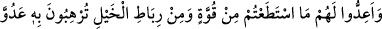
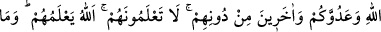
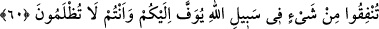

“İnşaallah” dedim.
Günler sonra yanıma bir ihtiyar kadın geldi ve: “Ey Seriy, Şünuziyye’de bir delikanlı
seninle görüşmek istiyor.” dedi. Ben de delikanlının yanına vardım. Baktım ki yere
serilmiş, başının altına da bir kerpici yastık yapmış. Ona selam verdim. Gözlerini açtı
ve:
“–Ey Seriy, Bu kadar cürüm affolunur mu dersin?” diye sordu. Ben: “Evet.” dedim.
Tekrar: “Ya benim gibi birisi affolunur mu?” dedi. Ben yine: “Elbette.” dedim. “Ben
günaha batmışım.” dedi. Bunun üzerine: “Boğulanları O kurtarır.” dedim. “Üzerimde
çok kimsenin hakkı var, ben ne yapacağım?” dedi. Şöyle cevap verdim:
“Haberde gelmiştir ki: Kıyamet gününde günahlarına tevbe eden bir adam huzura
getirilir. Beraberinde hasımları da vardır. Onlara: “Onun yakasını bırakın. Allah, size
ondan alacağınızın yerine başka mükafatlar bahşedecektir.” denilir.” Sonra genç bana
şöyle dedi:
“–Ey Seriy, birkaç dirhemim var. Ben ölünce onlarla ihtiyaçlarımı al ve beni kefenle.
Aileme durumu bildirme ki, bu kefeni haram bir kefenle değiştirmesinler.”
Yanında oturup biraz bekledim. Bir ara gözlerini açtı ve: “Çalışanlar bunun için
çalışsınlar.” (es-Sâffât, 37/61) âyetini okudu ve vefat etti. Dirhemleri alıp gerekli
şeyleri satın aldım. Sonra da onun yanına döndüm. Bir de baktım ki, insanlar koşarak
oraya geliyorlar. “Hayrola, ne var?” dedim. “Allah dostlarından biri vefat etmiş. Biz de
cenaze namazında bulunmak için buraya geldik.” dediler. Cenazenin yanına gelip onu
yıkadım, sonra da defnettik. Bir müddet sonra ailesi geldi. Ondan bir haber almaya
çalışıyorlardı. Onlara öldüğünü haber verdim. Hanımı da ağlayarak geldi. Gencin
ölmeden önceki halini anlattım. Benden kabrini göstermemi istedi. Ben de kefenini
değiştirmelerinden endişe ettiğimi söyleyince: “Hayır, vallahi öyle bir şey yapmam.”
dedi. Ben de kabri gösterdim. Kabri görünce ağladı ve iki şahid getirilmesini istedi.
Şahitler gelince bütün cariyelerini azad etti, gayr-ı menkullerini vakfetti ve diğer
mallarını da tasadduk etti. Ölene kadar oralardan ayrılmadı. (Allah her ikisine de
rahmet etsin).
Hâfız şöyle der:
Ömrü ve malı dost yolunda feda etmedik, yazık!
Çünkü aşk yolunda bu kadarcık bir fedakarlık bizden çıkmıyor